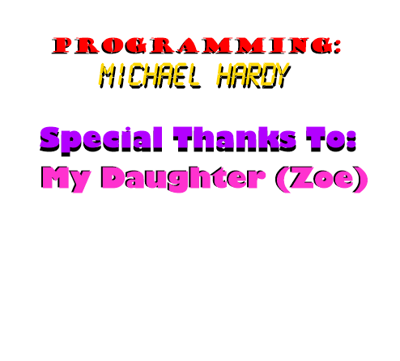

What's new in version 1.1.3:
10 extra seconds, but time bonuses now appear even if
time is more than 60 seconds.
System requirements:
For Best Performance:
Note: This Game was Created using
Windows 7 x64 Bit Installed,
and Windows 10 x64 Bit...
Game Help:
The goal of the game is to get as much points as possible and advancing levels.
You get
points by forming rows of at least three marbles of the same color.
You form rows by
moving marbles, but you can only move a marble if it,
at it's new position, forms a
row.
You move marbles by clicking on one marble and then clicking on its new
position.
You can only move a marble one step vertical or horizontal, not
diagonal.
I'm sure you will get the hang of it...
Time
You have a limited ammount of time to get your points. The clock starts
at 90 seconds,
but you can increase it up to 120 seconds. You gain more time by
creating chain reactions
and taking time bonuses. When the time hits 0 the game is over. If you
gain more time when the
clock already is at it's highest (120 seconds), you will gain points
instead (lot's of them).
Bombs
You also have bombs, which will remove a 3x3 area of marbles.
Right Click to use them.
You have 13 bombs when you start, but can gain more by creating chain
reactions at 5,
8 and 10 chains.
Scoring
Creating rows of marbles will give you 10 points for each marble, but
that will be
multiplied with the ammount of chain reactions you have created. The
key to points
is creating chain reactions!
Specials
Some marbles have special properties. They will have a small icon over
them, showing
which special property it is. Some properties only appear after you get
over a certain
ammount of points.
Horizontal Remover
This special will, when removed, clears the entire horizontal row it is
located at.
Vertical Remover
This special will, when removed, clears the entire vartical row it is
located at.
Color Remover
This special will, when removed, clears all the other marbles of the
same color.
Chain bonus
This special will, when removed, will increase your chain reaction
count, and
thus give you more points and time.
Time bonus
This special will, when removed, will give you an extra 5 seconds.
Switcher
This special will make it's marble change color every 10 seconds.
Shield
This special will defend it's marble from being removed one time.
Skinnable GUI (General User Interface):
The Game's Interface is Skinnable and Can Be Changed With Skin's... I have included Several Skins which can all be found in the Skins Directory of where you Installed the Game...
Hints:
the game menu or press F12. You will still be able
to enter a highscore.

Programming Notes:
I tried my Best to give this computer game all of the functionality of a Commercial Game!
I decided to release this game for free as of April of 2018...
http://www.typosoftdev.com/marbles/
Credits For The Development:
Author
Info:
Michael Hardy ( Missouri )
typosoftdev@outlook.com
FOR MORE SKINS VISIT THE WEB SITE AT http://www.typosoftdev.com/marbles/skins/